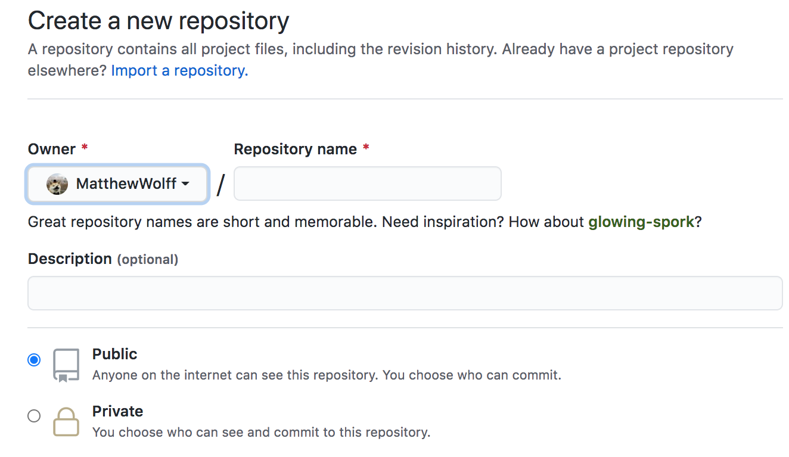
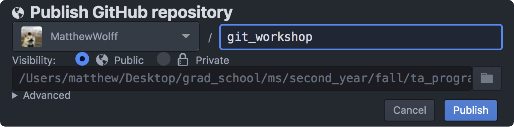

hub – brew install hub
- the only* thing you can’t do with standalone
gitis create repositories

(Note: GitHub lets you host (static) webpages for all of your projects, for free. The webpage associated with this project (above) is just an HTML document that I generated from the README using pandoc.)
Imagine you’re working on a paper CancerEvolution.docx and you re-write a section but you’re not sure if you want to keep it. Therefore, you “Save As†under “CancerEvolutionRewrite.docx”. As you’re working on this you end up re-writing another section and “Save As†to create a slightly different copy. Or maybe you just create draft after draft and want to have different versions for later. You’re essentially creating different version of the same document and manually organizing them on your desktop! Not very effective though.
A version control system for code! Gone are the days of “FinalPaperDraft.docx”, “FinalPaperDraftFinal.docx”, “FinalPaperDraftFinalFinal.docx”.
“By far, the most widely used modern version control system in the world today is Git. Git is a mature, actively maintained open source project originally developed in 2005 by Linus Torvalds, the famous creator of the Linux operating system kernel. A staggering number of software projects rely on Git for version control, including commercial projects as well as open source.”
It’s extremely useful for tracking and undoing changes to your code over time, as well as sharing your code with others.
It’s a online platform that lets you store and version control your code. It’s built around Git. There are others like it, such as GitLab and BitBucket.
Good question. Git exists purely on the command line, and is maintained independently from these platforms. You don’t need to know the command line to use GitHub or GitLab, you just need to understand what version control is (and how to copy-paste)!
There are a few different ways!
hub – brew install hub
git is create repositoriesAs a note, being a student gets you a premium version (Github Student Dev pack) of Github for free
It includes everything in GitHub Free, unlimited collaborators for private repositories, and advanced code review tools for private and public repositories.
hub command)This is how we publish and retrieve changes!
You push your local changes out to the repo, and then others can pull them in. Sometimes you’ve edited the same thing as someone else, and Git can’t figure out how to automatically combine them—this is when you’ll need to decide what to keep and what to toss. Situations like this can be frustrating when you’re working with other people, so sometimes it’s nice to have your own git workspace.
Want to start adding something new but don’t want to interfere with the stable code? Time to start a new branch! By default, you’re on the “master†branch.
Branches are useful for developing new features in isolation. Creating a new branch creates a copy of the old branch, but now you can grow it separately. When you’re done, you can splice that branch back into the main tree!
What is this splicing exactly? It’s the “merge†operation. Merging is best done when there aren’t conflicts between the new cold and the old code, but Git helps you handle conflicts when they arise.
The “origin†is the remote location that is housing the code. By default, it is named “origin”, which is just a convention that arose.
You can set up different remote locations if you like—I have set up both GitHub and GitLab on the same repository, I just needed to push my changes to each remote location.
The “master†is the default branch that is created when you’re working on a project. It, too, is a common convention. Amazon uses “mainline’ as their default name, and other companies are switching away from the”master" terminology. Branching is a useful feature for developing new or experimental changes in isolation without impacting the existing code.
I think it all comes together like growing a bonsai tree in your house. All together, it’s a gradual process where you can curate designs and shapes with the wood. You can keep the blinds closed or let specific people into your house!
A Pot with Soil: Having a GitHub or GitLab account is having a place to grow your plant. It’s your pot with soil.
A Seed: Creating the repo is like planting a seed—now you can watch it grow.
Taking up Nutrients…: Adding changes to your files! These are what you need to grow the project.
Growing Taller: Committing those changes to your project grows it. Commit after commit, the project grows bigger.
Opening the Blinds: Push! People need to see your project! If you don’t push your local changes to the repo, they might as well not exist! That said, you can push to a private repo, so that only people you let inside your house can see the bonsai tree.
Branching: Very literal here. You’re growing out a new branch from the trunk. The trunk will continue to be the main part of the tree, but the branch can grow separately.
Splicing A Branch Back In: Merging! You’re reintroducing a branch that previously diverged. Now it’s part of the main tree again and brought back some changes with it.
This metaphor falls apart a bit once you start factoring in other people. For example, what exactly is a merge conflict on a bonsai tree? What is rebasing? There’s probably a joke about cherry-picking here (a surprisingly useful git command). But it’s still a useful starting analogy.
Complex and abstract. It’s essentially a giant python dictionary with a few different types of objects in it (tree objects, commit objects, and blobs). At the same time, it holds within it a graph structure. Most people use it for years and years without ever bothering with what’s going on underneath and, frankly, I think it’s not worth understanding.
Let’s create a repository!
So let’s get started! GitHub has a few cute features with repos. Whenever you’re looking at a repo, if there’s a document named “README.*”, it will be displayed! The most common format is Markdown, which uses the extension “*.md”. It’s considered good practice to always include a README in the root of your repo with information about it, such as instructions on using it.
GitHub also has a few repository names that it can treat differently. For example, if you name a repo “[username].github.io”, GitHub will actually create a new address for you there, and you can create your own small, static website! Try visiting matthewwolff.github.io! Today, however, we’re going to create a different kind of specially named repo.

# Hey! 👻
* UW ➡️ Computer Science, Genetics & Genomics
* CMU ➡️ Computational 🅱️iology, Data Science

Go to GitHub on your profile again

This deserves it’s own little section, because you’ll typically want to use these. Generally you want to be careful about blindly adding folders in Git. Why? Because there’s probably some big or sensitive files in them somewhere that you don’t want to upload.
But adding things manually is so tedious… what if we could just specify what we want to ignore?
Enter .gitignore. This is a special file (at the root of your repo) that git checks to remember what NOT to consider when it’s checking what you’ve changed. It also prevents certain files from being added when you add entire directories. It’s very useful when you don’t want to upload large data files, secret credentials, or small config files created by your IDE!
git init and git remoteThis is how you create a local project!
git init # create the .git folder
git remote -v # you have nowhere to send your changes!
git remote add origin https://github.com/matthewwolff/github_workshop
git remote -v # origin is now set!git statusGit will automatically evaluate which files have been changed, created, or deleted, and will then give you a quick report
> git status
On branch master
No commits yet
Untracked files:
(use "git add [file]..." to include in what will be committed)
README.md
images/
index.html
nothing added to commit but untracked files present (use "git add" to track)git add --allA nice short-hand to add all the files at once! It’s recursive, so be careful
git commit -m "my message"It’s important to have a descriptive message, especially if you’re working with other people. Saying “Fixed bug†isn’t very useful!
git pushGit is decentralized. Your repository is local until you make it global. Use git push to send your changes off to the repository
git pullIf you’re working on a project on a lab computer and a home computer and making changes from both, pull the changes that you pushed from the other computer! Also, if you’re working with other people you want to make sure you have the latest changes
git checkout [filename]This one is good to know. If you want to undo all the changes that you made to a file, you can just “checkout†that file from the last commit. Very good for undoing mistakes or accidental changes
echo "i have created a repo on GitHub with this project name"
mkdir my_project && cd my_project
git init
git remote add origin https://github.com/matthewwolff/my_project
git status
echo "# My Project" >> README.md # create a change
git add --all
git commit -m "initial commit"
git push # publish it
rm README.md # oops
git checkout README.md # all betterUsing Git correctly helps future you and your teammates
--force.git/ folder will be bloated and you’ll have to use a tool like bfg to clean it outbfg to fix this mistakeAlmost every IDE (Integrated Developer Environment) that you use has git integration! For instance, Atom, IntelliJ, GoLand. It’s like a miniature GitHub desktop, except it’s not specific to GitHub!
Yes, there are actually a few, and the following list is not exhaustive:
I have dozens of bash aliases set up for certain git commands. It helps to not need to remember or worry about certain things, like which branch you’re on.
git whatchanged -p --abbrev-commit --pretty=medium
diff of the past commitsgit diff
git reset
git add a filegit log --oneline --decorate --graph
git status -s
git [push/pull] origin "$(git_current_branch)"
git stash and git stash pop
git stash pop to pop them off the stash stack (data structures!)git cherry-pick
git pull --rebase
git pull --rebase is if you merged since your last push. You might want to git fetch; git rebase -p @{u} (and check to make sure the merge was recreated properly) or do a normal merge in that circumstance.”Let’s talk about what you shouldn’t do, but might find useful. These all have to do with re-writing history. As a rule of thumb, you know that you’re doing something bad when you have to use git push --force, so please keep that in mind.
When you use the --force flag, that means your local repo disagrees with the origin. However, if you haven’t pushed yet, then you can manipulate all your local commits however you want! That’s the ideal use case for these.
git reset --hard [COMMIT HASH]
git loggit commit --amend: edit your last commit message
git add [file] && git commit -v --no-edit --amend
An alias I personally use a lot when I’m making lots of small adjustments to something I just pushed is:
If you use Oh-My-Zsh (I love it) instead BASH and have the git plugin, you have automatic access to a plethora of git aliases. As a small plug, Oh-My-Zsh is a ZSH framework that adds a ton of functionality to your terminal and has lots of different shell prompts or “themes”. Overall: Zsh + oh-my-zsh framework will give you auto-completion, tab completion, several cool themes, programming language integration and like bash is POSIX compliant (I suggest you not learn anything that isn’t—it won’t be generally portable knowledge).
You can try out my personal ZSH + oh-my-zsh set-up, which will also make the aliases available to you as long as you’re in ZSH: